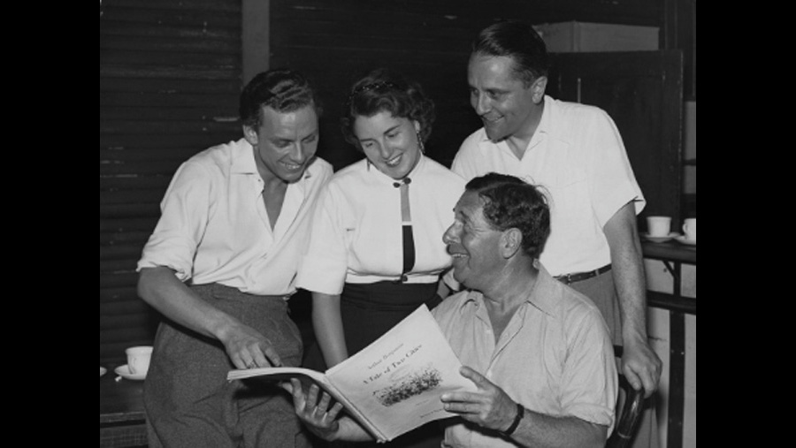

1957

CAST
Sydney Carton
-
John Cameron
Charles Darnay
-
Alexander Young
Lucie Manette
-
Heather Harper
Jarvis Lorry
-
Ronald Lewis
Dr. Alexandre Manette
-
Heddle Nash
Miss Pross
-
Janet Howe
Madame Defarge
-
Amy Shuard
Old Marquis
-
Geoffrey Clifton
Old Marquise
-
Enid Lindsay
Marquis St-Evrémonde
-
Michael Langdon
Gabelle
-
John Osborne
Young Countess
-
Ghena Lewis
Corporal
-
Thomas Gallagher
Jacques 1
-
Frederick Sharp
Jacques 2
-
Eric Shilling
Jacques 3
-
Alfred Hallet
Hurdy-Gurdy Man
-
Edward Mallin
Gaoler
-
Donald Frank
President of the Court
-
Frederick Sharp
Cripple
-
Eric Shilling
1st Woman
-
Olivia Rossi
2nd Woman
-
Anne Edwards
3rd Woman
-
Brenda Scarfe
CREATIVE TEAM
Music
-
Arthur Benjamin
Conductor
-
Leon Lovett